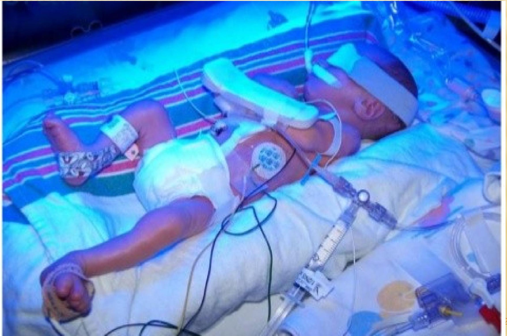

Neonatal Jaundice
Overview of Neonatal Jaundice
OBJECTIVES
- Define jaundice
- Differentiate between physiological and pathological jaundice
- describe the management of jaundice
- Discuss nursing management of a baby on phototherapy
- Describe exchange transfusion
- Discuss the two main types of blood incompatibilities
DEFINITION
Neonatal jaundice is the yellowish discoloration of the skin and/or sclera of newborn infants caused by tissue deposition of bilirubin.
- There is Excessive levels and accumulation of bilirubin in blood
- Normal levels are $0.2-1.4 \mathrm{mg} / \mathrm{dl}$.
- Normally manifests when the bilirubin levels are more than $5 \mathrm{mg} / \mathrm{dl}$.
Bilirubin metabolism
- When RBCs are broken down by haemolysis, they produce haeme and globulin.
- The haem part produces bilirubin,carbon monoxide and iron ( via biliverdin which is green)
- Unconjugated(indirect) bilirubin is fat soluble hence has to be converted to water soluble form(conjugated/direct bilirubin) for it to be excreted .
- Bilirubin is transported to the liver by binding to a protein(albumin)
- On arrival to the liver , bilirubin detaches itself from albumin
- Conjugation of bilirubin occurs in the liver
- Conjugation is done by glucuronyl transferase in which bilirubin is added to glucuronic acid to become bilirubin diglucuronide that is water soluble
- Excretion of the bilirubin is done through the biliary system into the intestines
- While in the intestines bilirubin is converted to stercobilinogen by the gut normal flora and excreted in stool
- Some of it is absorbed in the gut and becomes urobilinogen which is excreted in urine.
- If conjugation is interfered with there will be accumulation of unconjugated bilirubin leading to hyperbilirubinaemia and jaundice
- This bilirubin may cross the blood brain barrier and cause brain damage leading to a condition known as kernicterus (characterized by hypertonicity, seizures,lethargy,stiff neck with hyper extended head)
PHYSIOLOGICAL JAUNDICE
Characteristics:
- Affects both term and preterm babies
- It appears between 24 to 72 hours of life. It is apparent with signs on Day 3 of birth.
- It is self limiting in term babies and fades away within 7 days.
- the levels of bilirubin in term babies don't exceed $15 \mathrm{mg} / \mathrm{dl}$
CAUSES OF PHYSIOLOGICAL JAUNDICE
- Excessive breakdown of RBCs
While in the uterus the fetus relies on fetal hemoglobin which has a greater affinity for oxygen, than the adult Hb. Once the neonate is born it adapts to the pulmonary system of adult Hb and the large mass of RBCS being hemolyzed creates a bulk of bilirubin in the circulation.
- Glucuronyl transferase enzyme deficiency
Enzyme responsible for conjugation of bilirubin. Deficiency of this enzyme results in increased levels of unconjugated bilirubin.
- Increased enterohepatic reabsorption of bilirubin
Increases in newborns, because of lack of the normal enteric bacteria that breaks down bilirubin to urobilinogen/ stercobilinogen. Increased beta glucuronidase enzyme(hydrolyses bilirubin back to unconjugated bilirubin state). Accelerated by lack of feeding.
- Decreased albumin binding capacity:
albumin binds to unconjugated bilirubin and transports to liver for conjugation. In preterm babies, the albumin is in lower levels, hence bilirubin will bind to tissues with bilirubin affinity such as the skin and brain.
PATHOLOGICAL JAUNDICE
- Clinical jaundice detected before 24 hours of life.
- Characterized by rapid rise in serum bilirubin ( $5 \mathrm{mg} / \mathrm{dl}$ ) per day
- Serum bilirubin greater than $15 \mathrm{mg} / \mathrm{dl}$
- Clinical jaundice persisting beyond 14 days of life
- Clay or white colored stool and/dark urine staining the clothes yellow
CAUSES OF PATHOLOGICAL JAUNDICE
- Increased production of bilirubin: due to increase in hemoglobin destruction
Causes of destruction:
- Blood type/group incompatibility
- Hemoglobinopathies- sickle cell disease
- Enzyme deficiency -G6PD (maintains the integrity of the cell membrane)
- Sepsis/ infections
- Polycythemia
- Interference with transportation due to:
- reduced albumin
- acidosis, hypothermia
- hypoxia,
- drugs that compete for albumin binding sites e.g. aspirin/ ampicillin
- Conjugation interference:
- Immaturity of enzyme systems.
- Lack of/ inadequate glucuronyl transferase enzyme.
- Excretion: bilirubin excretion is interfered with e.g.:
- Hepatic obstruction due to anomalies (extrahepatic biliary atresia)
- Infection i.e. neonatal hepatitis can cause an excess of unconjugated bilirubin
Management of Jaundice
MANAGEMENT OF PHYSIOLOGICAL JAUNDICE
- Admit the baby in the newborn unit and assess the general condition
- Start early and frequent feeds (breast-feeding) for glucose provision to the liver cells, and also to encourage bowel colonization with normal flora; important for formation of stercobilinogen for excretion in stool
- Closely monitor serum bilirubin levels at 12-24 hour interval
- If the bilirubin takes long to clear, phototherapy may be necessary
MANAGEMENT OF PATHOLOGICAL JAUNDICE
- Assessment of the newborn to determine the degree of jaundice
- To determine the cause of jaundice
- On physical examination, check for:
- Skin color and sclera color
- Signs of lethargy, stiff neck, hyperextended neck, seizures, (signs of kernicterus)
- Presence of dehydration or starvation
- Light stool or dark urine
TREATMENT MODALITIES FOR PATHOLOGICAL JAUNDICE
- Phototherapy
- Exchange transfusion
High intensity light at a given wave length (white to blue) administered in order to convert unconjugated bilirubin to conjugated bilirubin, which is excreted through stool/urine.
PHOTOTHERAPY
NURSING CARE OF THE BABY ON PHOTOTHERAPY
- Clean the skin with warm water, avoid using creams and lotions on the skin of the baby
- Expose the whole body to ensure there is increased surface area of skin to light. Keep turning the baby 2 hourly to expose all parts to the light and monitor for rashes or dryness.
- Top-tail the baby for hygiene and change linens frequently
- Observe the skin color to monitor the progress. Monitor the temperature to prevent hyperthermia
- Cover the eyes with an eye pad to prevent retinal damage from the light. Uncover during breastfeeding to ensure eye contact
- For continuous phototherapy, give extra fluids for every ill neonate or dehydrate babies.
- Monitor neurological status of the newborn e.g. the sleep/wake patterns
- Explain and reassure the family
SIDE EFFECTS OF PHOTOTHERAPY
- Hyperthermia leading to fluid loss and dehydration
- Retinal damage due to high intensity lights
- Skin rashes and skin burns
- Visual deprivation and isolation
EXCHANGE TRANSFUSION
The treatment in which the baby's blood is gradually removed and replaced by donor blood.
Done when bilirubin levels are toxic (23-29)
Indications:
- Infants with a hemolytic disease
- Preterm babies less than 1500 g
- Healthy term babies with bilirubin levels of 23 to 29
Complications:
- Circulatory collapse
- Incompatibility reactions
- Acquired infections
- Blood clots
COMPLICATIONS OF JAUNDICE
- Retinal damage due to light used in phototherapy
- Anemia due to increased RBC haemolysis
- Hyperthermia associated with phototherapy
- Hypocalcemia due to increased metabolism
- Kernicterus when bilirubin crosses BBB causing brain damage.
HEMOLYTIC JAUNDICE
OVERVIEW
- Types of incompatibility
- Prevention
- Nursing management
TYPES OF INCOMPATIBILITY
- Rhesus incompatibility
- ABO incompatibility
RHD INCOMPATIBILITY
- Also referred to as hemolytic disease of the newborn
- The Rhesus complex (The D antigen) is an antigen found in the red blood cells of about 83% of the population.
- Problems arise if a Rhesus negative mother and a Rhesus positive father have a child who inherits the Rhesus positive traits of the father.
- The placenta usually acts as a barrier to fetal blood entering the maternal circulation.
- However, during pregnancy or birth, fetomaternal hemorrhage (FMH) can occur
- The woman's immune system reacts by producing anti-D antibodies that cause sensitization.
- In subsequent pregnancies these maternal antibodies can cross the placenta and destroy fetal erythrocytes.
- This hemolytic disease of the fetus and newborn caused by Rh isoimmunization can sometimes occur during the first pregnancy
- Sensitization during the first pregnancy or birth leads to extensive destruction of fetal red blood cells during subsequent pregnancies
- Rh isoimmunization can result from any procedure or incident where maternal blood leaks across the placenta or from the transfusion of Rh positive blood to the woman
CELL DESTRUCTION
Cells are destroyed, causing anemia and excess bilirubin in the blood of the baby. The baby will consequently be born with jaundice, which is normally seen 12-24 hours after delivery.
NB: Sometimes the neonate may not appear jaundiced, but the amniotic fluid will be golden and the cord is yellow.
PREVENTION OF RHD ISOIMMUNIZATION
Anti D Ig:
Prevention is by administration of anti D immunoglobulin to mothers with non sensitized negative blood type who have a baby with Rh positive blood type within 72 hours of birth or any other sensitizing event
PROPHYLAXIS FOLLOWING OTHER SENSITIZING EVENTS
- Any threatened, complete or incomplete or missed abortion after 12 weeks of pregnancy; if bleeding persists, anti-D should be given at 6 week intervals
- Any spontaneous miscarriage before 12 weeks that requires surgical intervention to evacuate the uterus
- Therapeutic termination of pregnancy by surgical or medical methods regardless of gestational age
- Ectopic pregnancy
- Amniocentesis, cordocentesis, chorionic villus sampling, fetal blood sampling or any other invasive intrauterine procedure
- External cephalic version of the fetus
- Fetal death in utero or stillbirth
- Abdominal trauma and antepartum hemorrhage
- Transfusion of Rh positive blood or platelets
ANTENATAL MANAGEMENT
A mother who is Rhesus negative should be closely observed and at 26-28 weeks gestation; blood is taken for Coomb's test, which is repeated at 34-36 weeks.
Antibody titre is estimated. If it continues to rise, then labor is induced.
However, Intravenous immunoglobulin (IVIG) has the potential to maintain the fetus until intrauterine fetal transfusion can be performed. (possible in more developed countries).
ABO INCOMPATIBILITY
- ABO isoimmunization usually occurs when the mother is blood group O and the baby is blood group A. or less often group B.
- Blood of types A and B has protein or antigen not present in type O blood.
- Individuals with type O blood develop antibodies against A and B
- By the first pregnancy the individuals may already have high serum anti-A and anti-B antibody titers.
- Some women produce IgG antibodies that can cross the placenta and attach to fetal red cells and destroy them
- First and subsequent babies are at risk; however, the destruction is usually much less severe than with Rh incompatibility. ABO incompatibility is also thought to protect the fetus from Rh incompatibility as the mother's anti-A and anti-B antibodies destroy any fetal cells that leak into maternal circulation.
COMPLICATIONS
- Hydrops fetalis due excessive RBC hemolysis (leading to anemia)It mainly presents as massive edema even to most organs and finally causes, multiple organ failure
- Anemia.
- Kernicterus